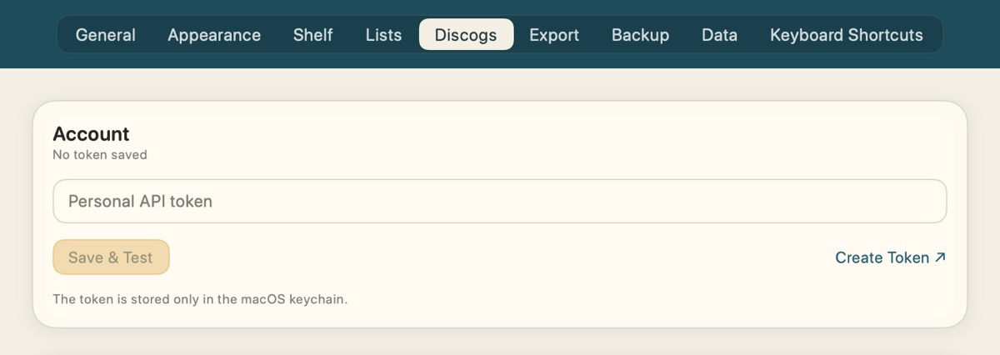
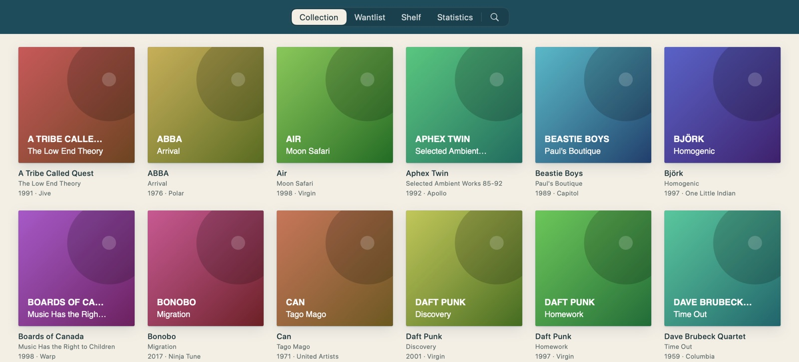
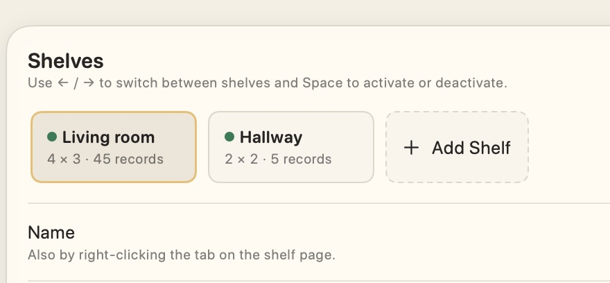
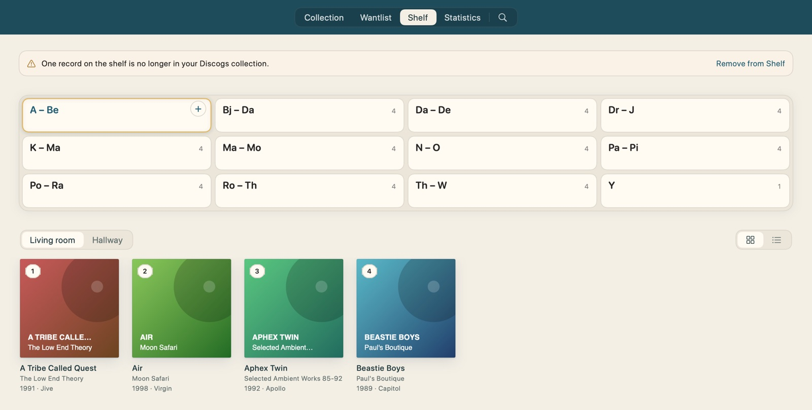
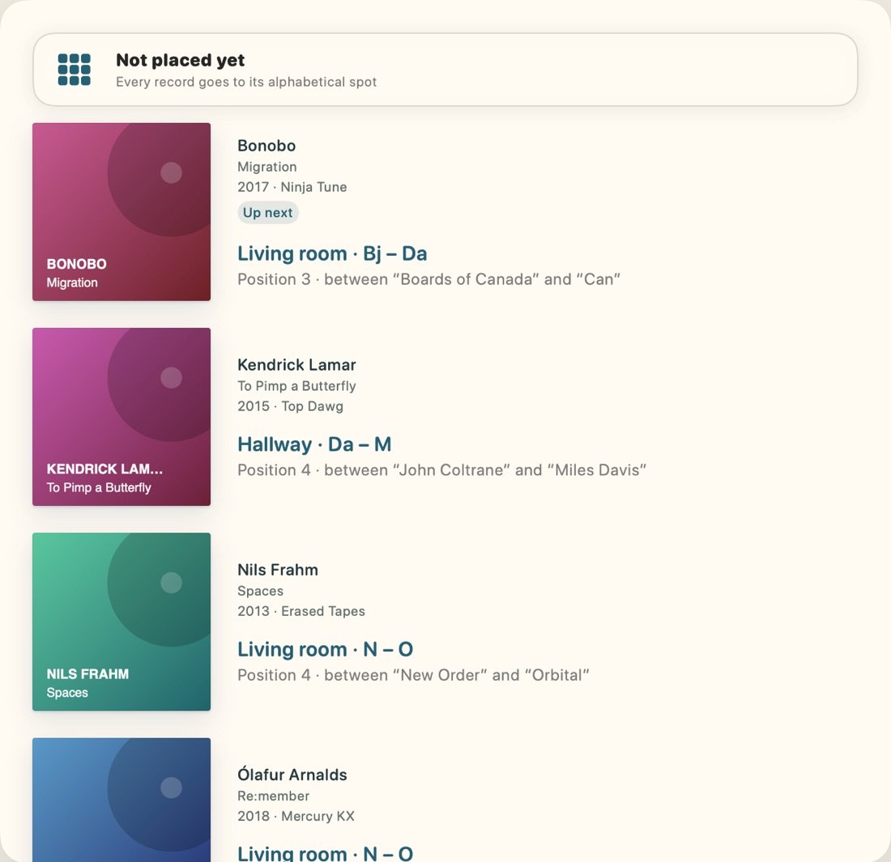
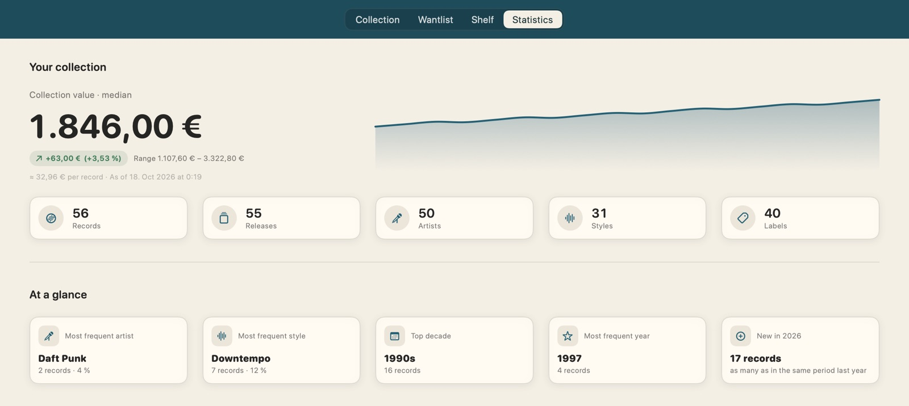
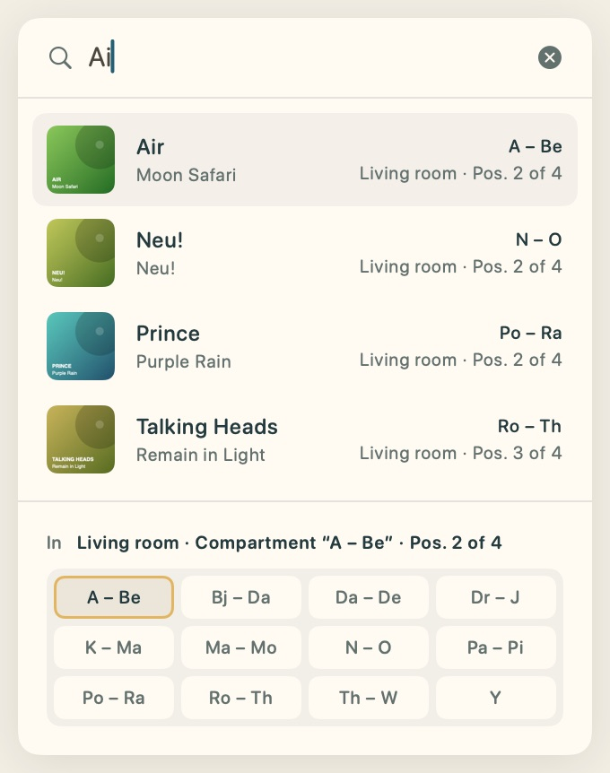

User Guide
Plattenregal
Your Discogs collection –
and where every record sits on the shelf.
and where every record sits on the shelf.
Plattenregal brings in your collection and your wantlist from Discogs – and remembers on which shelf, in which compartment and at which spot every record sits.
On top of that there are a search right from the menu bar, statistics with the value of your collection, a search list for records you can’t find right now, a sale list, backups of your shelf layout and exports as CSV or PDF. This guide takes you from installing to your first filled shelf in a few minutes.
Plattenregal is a private app and not notarized by Apple. That’s why macOS stops the first launch when the app came from the internet, via AirDrop or by mail. You only need to do this once:
After that, Plattenregal starts like any other app.
Drag the new version to Applications the same way and let it replace the old one. Your collection, your shelves and your token stay, as they aren’t stored inside the app. If macOS asks whether Plattenregal may use your keychain, choose Always Allow: that’s where your Discogs token is kept. The “Open Anyway” step may be needed once more. Plattenregal checks for a new version once a week on its own and then shows a window with the download – how often is up to you under Settings → General (weekly, monthly or never); to check by hand, choose Plattenregal → Check for Updates.
Plattenregal doesn’t create records itself. Everything you see comes from your Discogs account. To get to it, you need a personal token, a kind of key for the Discogs API. Plattenregal only reads with it and never changes anything on Discogs.

It’s kept only in the macOS keychain, on this Mac alone. It never ends up in files, settings or the log. On the internet, Plattenregal only talks to Discogs and, to check for updates, to GitHub, always encrypted. The token only goes to Discogs.
The welcome on first launch takes you straight to the field with Enter Token. Instead, Start Demo opens a sample collection of about 50 albums. Change whatever you like there, nothing is saved. Later: Help → Getting Started

All your records as a cover grid or a list. Clicking a cover shows details and the tracklist; clicking a track opens it on YouTube. Drag the list’s columns to reorder them, right-click to hide them.
What you’re still looking for, straight from your Discogs wantlist.
Your shelves with their compartments and which record sits where.
Collection value, its history and breakdowns by artist, style and year.
The magnifying glass at the end of the sections at the top (⌘F) opens the search field. It finds records by artist, title, label, catalog number, genre, style and more. esc clears the search. On the shelf page the search shows right away which compartment a record is in.
Right-clicking a cover offers to show the record on the shelf, to find a spot for it or to open it on Discogs.

You can also refresh with ⌘R or by pulling down with two fingers on the trackpad.
Plattenregal doesn’t know your real shelf on its own. You set it up once, in IKEA KALLAX sizes or entirely your own with 1 to 6 columns and rows. Several shelves, say in the living room and the hallway, are no problem.


Plattenregal names the compartments itself after the letter range they hold, for example “A – Be”. A click selects a compartment. Below it, its records appear in their order, as covers or as a list. Clicking a cover opens “Edit Copy”, where a slider moves the record to another position.

+ among the round button’s actions at the bottom right of the shelf page lists every record without a spot yet, alphabetically by artist. Each one shows where it belongs – with several cabinets, in the one shown. Put the record on your real shelf and click its row, and Plattenregal remembers the spot.
To fill one compartment on purpose, move the pointer over it and click the small + at its top right.
Right-click a compartment → Check Order. Plattenregal shows the fewest moves that put the compartment back in order, step by step to tick off. Always by artist, and for the same artist by title, year or label as you choose.
Records that never go on the shelf, singles in a box for example, can be marked Kept off shelf with a right-click. Plattenregal then no longer offers them for placing.
Can’t find a record right now? Right-click → Add to Search List. It then gets a red dot in the “Tags” column of the lists. Under Settings → Lists you tick it off as found.
With Mark for sale you collect records that may go. They stay where they are, with a blue dot in the “Tags” column. All Sold under Settings → Lists takes them all out of their compartments at once.

The statistics show what your collection is worth at Discogs marketplace prices and how that develops. On top come figures on artists, styles, labels and decades, and a Random pick that suggests a record from your collection with ⇧⌘R. Refresh with ⌘R.
The records themselves can always come back from Discogs. Where they sit on the shelf exists only on your Mac. That’s why Plattenregal backs up the layout automatically after every change. Under Settings → Backup you can choose a folder of your own, in iCloud Drive for example. There you can also bring back an earlier state and see beforehand what will change.
Under Settings → Export you turn your collection, wantlist or sale list into a CSV file for Excel and Numbers or a print-ready PDF list, in shelf or alphabetical order. If you like, Plattenregal writes them to a folder daily, weekly or monthly.
Plattenregal doesn’t need to be in front for this. A click on the small record at the top of the menu bar or ⌥ Space opens a search field over whatever is open, even over other apps.
After a few letters the matches are there, each with its compartment, shelf and position. The compartment of the selected match lights up in gold in the shelf in miniature below. A click holds the match, so you can walk over to the shelf at your own pace – or it shows the record in Plattenregal or on Discogs, as you choose in the settings. esc clears the field, a second time closes the search.
After ⌘Q Plattenregal keeps running without a Dock icon, so the search is always there. To quit completely: ⌥⌘Q or right-click the record. Choose where the search appears and how it looks under Settings → General, where everything can also be switched off.

Open the settings with ⌘, or the round button. Under Appearance you choose between the designs Modern with Liquid Glass, Classic as in this guide and the dark Vinyl.
| Tab | What you’ll find there |
|---|---|
| General | Language (German or English), start page, open at login, menu bar and background, updates, demo |
| Appearance | Design, light or dark, colors, your own names for the sections, grid or list, order and cover size |
| Shelf | Add and change shelves, lock compartments, sorting and labeling |
| Lists | Turn the search list and the sale list on or off and work through them |
| Discogs | Token, connection test, sync |
| Export | CSV or PDF, automatic export to a folder |
| Backup | Back up and restore the layout, automatic backup, location |
| Data | Storage, cover cache, log, reset |
| Keyboard Shortcuts | All shortcuts to look up |
| You see | What helps |
|---|---|
| “Plattenregal” not opened | Allow it once under Privacy & Security, see page 3. |
| Token not accepted | Check the token on Discogs or create a new one, and enter it again under Settings → Discogs. |
| Keychain prompt | Happens after an update. Choose Always Allow. |
| “Plattenregal is already open” | The app is running a second time. Quit the other one, your data isn’t affected. |
| Record missing from the collection | What you newly add on Discogs shows up after the next sync: ⌘R. |
| Record of the Day on the desktop | Right-click the desktop → Edit Widgets → Record of the Day. A click on it shows the record on the shelf. |
| Shelf emptied by mistake | Restore an earlier state of the layout under Settings → Backup. |
| Starting over | Settings → Data → Reset. Plattenregal backs up the layout first, backups are kept. |
Reporting a problem: Under Settings → Data → Diagnostics, save the log to a file with Save As. Add the version from Plattenregal → About Plattenregal. The log never contains your Discogs token.
Plattenregal 1.0.0 · by Patrice Werner · for macOS 27 on Macs with Apple silicon.
Your data stays on your Mac. Plattenregal only talks to Discogs and, for updates, to GitHub, and sends nothing about you to third parties.
This application uses Discogs’ API but is not affiliated with, sponsored or endorsed by Discogs. ‘Discogs’ is a trademark of Zink Media, LLC.